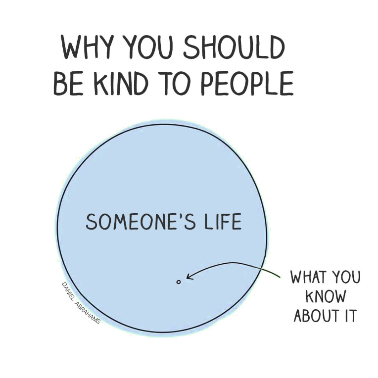
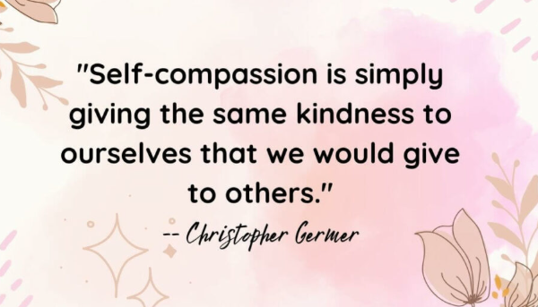

By Juanita Wells
Let's think about your day for a moment. The good, the bad, and everything in between. Sometimes, the smallest inconvenience can become the worst part of our day, especially when we're already dealing with so much.
Now, let's flip perspectives. Have you ever stopped to consider whether something you said or did might have been the worst part of someone else's day? It may have seemed insignificant to you, but that doesn't mean it weighed the same to them.

We teach children to be kind, but somewhere along the way, we start telling people to develop thicker skin instead. Why? The world can be harsh, but we're the ones who make it that way. You never know when your words might be the last straw for someone who's already struggling. A little kindness can go a long way.
Life is coming at all of us from different directions. Everyone is dealing with something, whether we can see it or not. We may not be able to change what someone is going through, but we can choose how we treat them.
Be the kindness you want to receive from others.

And the best part? It's FREE!